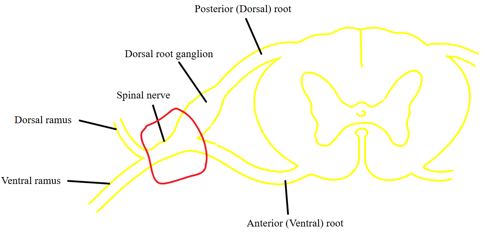
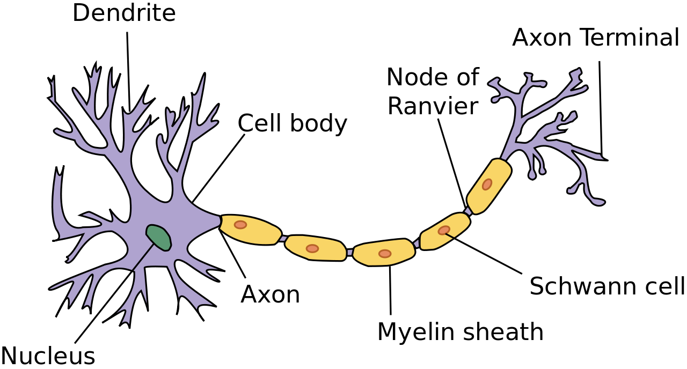
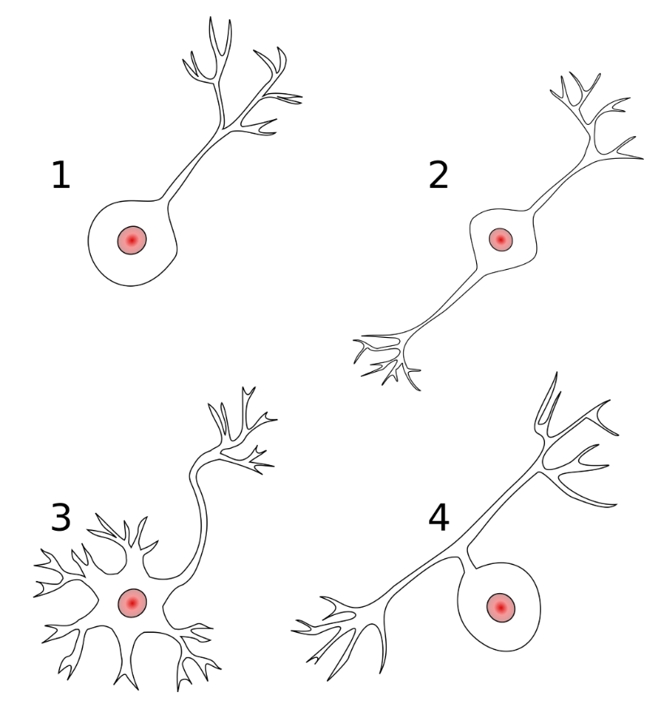
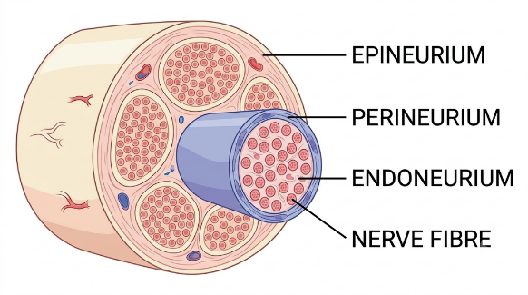

Nervous system
General Consideration
Divisions
- Central nervous system
- Brain and spinal cord
- Peripheral nervous system
- Spinal nerves
Definition: Motor and sensory
- Sensory nerves = Afferent nerves
- Nerves carrying impulses to central nervous system (brain and spinal cord)
- Motor nerves = Efferent nerves
- Nerves carrying impulses to effector organs (muscles and glands)
- A mixed nerve carries both sensory and motor fibres. The median nerve, for example, supplies sensation to part of the hand and motor input to several forearm and hand muscles.
How a mixed spinal nerve form
The dorsal root carries sensory fibres into the spinal cord. The cell bodies of these sensory neurons lie in the dorsal root ganglion. The ventral root carries motor fibres out of the spinal cord. The two roots unite to form a short mixed spinal nerve. It then divides into dorsal and ventral rami, which both carry sensory and motor fibres.

Parts of brain
Prosencephalon (Forebrain)
Divided into
Telencephalon - forms cerebrum
Diencephalon - forms thalamus, epithalamus, hypothalamus and deep seated cerebral nuclei
Mesencephalon - (Midbrain)
Rhombencephalon (Hindbrain)
Divided into
Metencephalon – forms pons and cerebellum
Myelencephalon - forms medulla
Cranial nerves
Direct connections with brain
12 pairs of cranial nerves
- Olfactory nerve
- Optic nerve
- Oculomotor nerve
- Trochlear nerve
- Trigeminal nerve
- Abducens nerve
- Facial nerve
- Vestibulocochlear nerve
- Glossopharyngeal nerve
- Vagus nerve
- Accessory nerve
- Hypoglossal nerve
Spinal cord
- Downward continuation of Medulla oblongata
- Extends from lower margin of foramen magnum
- Extends up to lower border of L1 vertebra in adults
- Extends up to L3 vertebra in infants
- Spinal cord is a component of the Central Nervous System while the spinal nerves are part of the Peripheral Nervous System
Spinal segment
Definition
- A segment of the spinal cord including a single pair of spinal nerves
- Represents spinal innervation of a single primitive metamere
- Each cord segment gives rise to a pair of spinal nerves
- Importance: In understanding the injuries to spinal cord - concept of spinal segment is essential
Spinal nerves
31 pairs of spinal nerves arise from cervical, thoracic, lumbar and sacral regions of the cord
- 8 cervical
- 12 thoracic
- 5 lumbar
- 5 sacral
- 1 coccygeal nerve
Neuron: An electrically excitable cell that processes and transmits information through electrical and chemical signals

Classification based on dynamics
Golgi type I neuron is a neuron which has a long axon that begins in the grey matter of the central nervous system and may extend from there
Golgi II neurons, in contrast, are defined as having short axons or no axon at all
Classification based on shape
Pyramidal cells
Eg: Purkinje neurone from the cerebellum
Fusiform cells - Spindle shaped
Pyriform cells - Flask shaped
Classification based on polarity of processes extending from the cell body
1. Unipolar
2. Bipolar
3. Multipolar
4. Pseudo bipolar (wrongly named as pseudo unipolar)

Peripheral nerve organisation
A peripheral nerve contains axons that carry signals between the central nervous system and peripheral structures such as the skin, muscles and glands.
Schwann cells support peripheral axons and form myelin around those that are myelinated.
Connective tissue supports the individual fibres, groups them into fascicles and binds the fascicles together.
Connective tissue coverings
Covering | What it surrounds | Main role |
Endoneurium | Individual nerve fibres within a fascicle | Provides delicate support around the axon and its associated Schwann cell covering. |
Perineurium | Each nerve fascicle | Forms a protective sleeve and helps regulate the movement of substances into the fascicle. |
Epineurium | The whole nerve and the spaces between its fascicles | Binds the fascicles together, protects the nerve and carries larger vessels that supply it. |
The word roots identify the level of organisation. Endo- means “within,” peri- means “around,” and epi- means “upon.”

Ganglion
Definition: Collection of cell bodies outside CNS
Two broad categories of ganglia
1. Dorsal root ganglia
In relation to the spinal cord
2. Autonomic ganglia
Divided into
Sympathetic ganglia - just next to spinal cord
Parasympathetic ganglia - near the effector organs
| Sympathetic ganglia | Spinal ganglia |
Location | Next to vertebral column | Dorsal root of spinal nerve |
Types of neurons | Multipolar neurons | Pseudo unipolar neurons |
Arrangement | Scattered | Grouped |
Neuroglia
Supporting cells of nervous system
Eg:
- Astrocytes - Forms blood brain barrier
- Oligodendrocytes - CNS myelination
- Microglia
- Ependymal cells
Schwann cells - for PNS myelination
Neuronal synapse
Places where neurons connect and communicate with each other
Components of synapse
Presynaptic terminal
- At the ends of the axon
- Places where electrical signal is converted to chemical signal
Postsynaptic terminal
- Has specialized receptors
Types of synapses
Electrical
- Connexins allow direct passage of current between the neurons
Chemical
- Neurotransmitters - convey the communication between the neurons
Types of chemical synapse
- Axodendritic - Connection between axon of a neuron with dendrite of the other
- Axosomatic - Connection between the axon of a neuron with cell body of the other
- Axoaxonic - Connection between the axon of a neuron with axon of the other
Denervation of a muscle
- Loss of innervation of a muscle
- Leads to muscular atrophy and degeneration (denervation atrophy)
- Muscle fails to act
Paralysis - complete loss of muscle function
Paresis - a condition of muscular weakness
Neural Plasticity (Neuroplasticity)
Neural plasticity refers to the capacity of the nervous system to modify its structural organization and functional properties in response to internal or external stimuli, learning, experience, developmental cues, or injury.
Fundamental Principle: Activity-dependent structural and functional synaptic remodeling (Hebbian plasticity).
Electrophysiological Basis: LTP (AMPA receptor insertion mediated by NMDA/Ca2+/CaMKII) vs. LTD (AMPA receptor endocytosis via phosphatases).
Adult Neurogenesis Sites: Subgranular zone (hippocampus) and Subventricular zone (lateral ventricles).
CNS vs. PNS Regenerative Barrier: The CNS fails to regenerate long axons primarily due to myelin-associated inhibitors (Nogo-A, MAG) and the glial scar (CSPGs from reactive astrocytes), not because neurons inherently lack functional capacity.